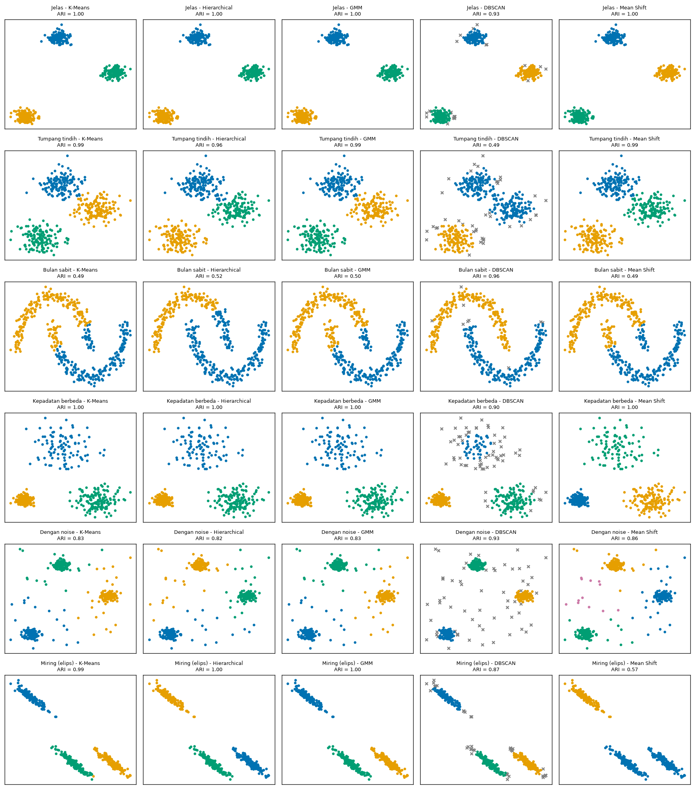
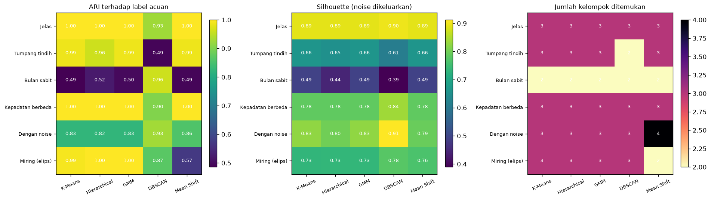
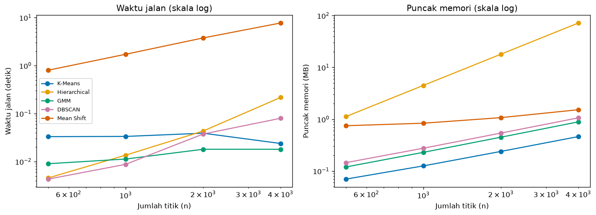

Bab 4 — Algorithm Comparison and Benchmarking¶
Learning Objectives¶
Setelah mempelajari bab ini, kamu mampu:
- Menjelaskan mengapa algoritma clustering perlu dibandingkan, dan apa arti perbandingan yang adil.
- Merancang protokol perbandingan: dataset, praproses, konfigurasi, dan metrik yang konsisten.
- Memilih algoritma berdasarkan karakter data, bukan kebiasaan.
- Membandingkan lima algoritma pada jumlah kelompok, noise, bentuk kelompok, skor metrik, waktu jalan, dan memori.
- Menyusun dan membaca tabel hasil eksperimen.
- Menjelaskan skor yang saling bertentangan.
- Mengenali keterbatasan benchmark dan mengapa tidak ada algoritma terbaik universal.
- Menjalankan Eksperimen A dari awal sampai akhir dan mencatatnya.
Introduction¶
Level 4 Bab 7 membandingkan lima algoritma secara visual. Level 5 memberi alat ukur. Bab ini menyatukannya dalam sebuah eksperimen perbandingan yang terencana: semua algoritma dijalankan pada kondisi yang sama, hasilnya diukur dengan beberapa metrik, dan seluruhnya dicatat.
Pertanyaan yang ingin dijawab: "Bagaimana perilaku lima algoritma pada data dengan karakter berbeda, dan apa yang membuat perbandingannya adil?"
Bab ini juga mengajarkan sikap penting: sebuah benchmark bukan perlombaan yang menghasilkan juara. Ia adalah cara melihat kapan dan mengapa sebuah algoritma cocok.
Prasyarat
Bab 2 dan Bab 3 Level 6, Level 4 Bab 7, dan Level 5. Definisi metrik ada di Level 5. Di sini metrik hanya dipakai sebagai alat.
Fundamental Concepts¶
| Istilah | Arti |
|---|---|
| Benchmark | Perbandingan terencana beberapa metode pada kondisi yang sama |
| Fair comparison | Perbandingan di mana perbedaan hasil tidak berasal dari perlakuan yang tidak sama |
| Protocol | Aturan tertulis tentang data, praproses, konfigurasi, dan pengukuran |
| Result table | Tabel yang merangkum hasil setiap kombinasi algoritma dan dataset |
| Runtime | Waktu yang dibutuhkan algoritma untuk berjalan |
| Peak memory | Memori terbanyak yang dipakai selama berjalan |
| Scalability | Bagaimana waktu atau memori bertambah saat jumlah data bertambah |
Detailed Explanation¶
Mengapa membandingkan algoritma?¶
Tidak ada algoritma yang paling baik untuk semua data (Level 4 Bab 7). Tiap algoritma memiliki asumsi tentang apa itu "kelompok". Membandingkan membantu kita melihat asumsi mana yang cocok dengan data kita, dan mengenali kegagalan sebelum terjadi di produksi.
Syarat perbandingan yang adil¶
Perbandingan menjadi tidak adil bila perbedaan hasil bisa berasal dari hal selain algoritma. Syarat minimalnya:
- Data yang sama. Semua algoritma memakai data identik (sidik jari data sama, Bab 2).
- Praproses yang sama. Misalnya
StandardScaleruntuk semua. - Seed yang sama dan dicatat.
- Jumlah usaha penyetelan yang sebanding. Algoritma yang disetel dengan 60 kombinasi lalu dibandingkan dengan yang tidak disetel sama sekali bukan perbandingan yang adil.
- Metrik yang sama, dihitung dengan cara yang sama, dengan perlakuan noise yang dinyatakan.
- Label acuan hanya untuk menilai, tidak untuk menyetel.
- Dokumentasi asimetri. Tidak ada perbandingan yang sempurna sama rata. Kalau ada asimetri (misalnya satu algoritma diberi K, yang lain harus menemukannya), nyatakan dengan jelas.
Memilih algoritma berdasarkan karakter data¶
| Karakter data | Algoritma yang biasanya cocok | Catatan |
|---|---|---|
| Gerombol bulat, jelas | K-Means, GMM, Hierarchical (Ward) | Semua sering memberi hasil mirip |
| Gerombol elips | GMM (full), Hierarchical |
K-Means memakai asumsi bulat |
| Bentuk melengkung | DBSCAN, Hierarchical (single) |
Algoritma berbasis centroid memotong bentuknya |
| Ada noise dan outlier | DBSCAN | Mengenali noise secara eksplisit |
| Kepadatan sangat berbeda | GMM, K-Means, Mean Shift | DBSCAN dengan satu eps sulit |
| K tidak diketahui | DBSCAN, Mean Shift | Menemukan jumlah kelompok dari data |
Tabel ini adalah panduan awal, bukan hukum. Eksperimen kita akan menguji sebagian di antaranya.
Komponen perbandingan¶
- Jumlah kelompok yang ditemukan: apakah sesuai dengan struktur data?
- Penanganan noise: berapa titik dianggap noise?
- Bentuk kelompok: apakah bentuk yang ditemukan sesuai bentuk data? (dilihat dari gambar)
- Metrik: internal (tanpa label) dan eksternal (dengan label acuan, bila ada).
- Waktu jalan dan memori: biaya komputasi.
Waktu jalan dan memori¶
Waktu dan memori bertumbuh berbeda pada tiap algoritma saat data bertambah.
- Hierarchical (Ward) menyimpan jarak antar semua pasangan titik. Untuk \( n \) titik, matriks jarak ringkas berisi \( n(n-1)/2 \) angka, masing-masing 8 byte (tipe
float64). Jadi memori tumbuh kuadratik: data dua kali lebih banyak membutuhkan memori sekitar empat kali. - K-Means dan GMM hanya perlu menyimpan titik dan centroid atau komponen, sehingga memori tumbuh kira-kira linear.
- DBSCAN mencari tetangga tiap titik, dan Mean Shift menggeser jendela dari banyak titik awal, yang bisa mahal secara waktu.
Waktu berubah tiap eksekusi
Angka waktu jalan bergantung pada komputer, beban lain, dan jumlah inti prosesor. Karena itu waktu tidak dicetak ke output yang dicocokkan, tetapi disimpan ke CSV dan digambar. Yang dapat dipercaya adalah pola pertumbuhannya, bukan angka tepatnya.
Alur benchmark¶
flowchart LR
A[Pertanyaan<br/>dan protokol] --> B[Siapkan dataset<br/>berkarakter berbeda]
B --> C[Praproses sama<br/>seed sama]
C --> D[Tetapkan konfigurasi<br/>tiap algoritma]
D --> E[Jalankan semua<br/>kombinasi]
E --> F[Ukur: jumlah kelompok,<br/>noise, metrik, waktu, memori]
F --> G[Tabel hasil<br/>dan visualisasi]
G --> H[Tafsirkan, sebut asimetri<br/>dan batasan]Menafsirkan skor yang bertentangan¶
Seperti di Level 5 Bab 8, metrik internal dan eksternal sering tidak sepakat. Cara menyikapinya:
- Cari tahu apa yang diukur tiap metrik. Silhouette: jarak ke kelompok tetangga. ARI: kecocokan keanggotaan dengan label acuan.
- Periksa perlakuan noise. Metrik internal dihitung tanpa noise, ARI menghitung noise sebagai kelompok sendiri. Itu bisa membuat peringkat berbeda tanpa ada yang "salah".
- Lihat gambar.
- Laporkan keduanya dan jelaskan perbedaannya, jangan memilih yang menguntungkan.
Keterbatasan benchmark¶
- Hanya mewakili dataset yang dipakai. Enam dataset sintetis kecil tidak mewakili semua data.
- Hasil bergantung pada cara penyetelan. Kita akan melihat bahwa pilihan aturan penyetelan mengubah hasil Mean Shift secara drastis.
- Asimetri yang tidak bisa dihilangkan. Memberi K kepada sebagian algoritma menguntungkan mereka.
- Sintetis lebih bersih dari data nyata.
- Waktu jalan khas komputer tertentu.
Kesalahan umum¶
- Memberi perlakuan berbeda (praproses, seed) pada algoritma berbeda tanpa menyadarinya.
- Menyetel satu algoritma dengan sungguh-sungguh dan yang lain tidak.
- Memilih metrik yang menguntungkan satu algoritma.
- Menyatakan satu algoritma terbaik dari satu dataset.
- Mengabaikan noise saat membandingkan skor.
- Menyajikan waktu jalan tanpa menyebut ukuran data dan lingkungan.
- Tidak mencatat konfigurasi sehingga tidak bisa diulang.
Experimental Procedure (Eksperimen A)¶
- Pertanyaan: bagaimana perilaku K-Means, Hierarchical (Ward), GMM, DBSCAN, dan Mean Shift pada enam jenis data?
- Dataset (alasan):
- Jelas: tiga gerombol terpisah. Pembanding paling mudah.
- Tumpang tindih: tiga gerombol yang saling menempel. Menguji ketahanan.
- Bulan sabit: bentuk non-bulat.
- Kepadatan berbeda: tiga gerombol dengan sebaran dan ukuran berbeda.
- Dengan noise: tiga gerombol ditambah 50 titik acak.
- Miring (elips): gerombol berbentuk elips.
- Praproses:
StandardScaleruntuk semua. Seed 42. - Konfigurasi: K-Means, Hierarchical, dan GMM diberi K acuan. DBSCAN dan Mean Shift menentukan jumlah kelompok sendiri, dengan parameter yang dipilih tanpa label lewat grid, batasan, dan Silhouette tertinggi (prosedur Bab 3).
- Metrik: jumlah kelompok, proporsi noise, Silhouette, DBI, CHI (noise dikeluarkan), ARI dan NMI terhadap label acuan (noise dihitung sebagai satu kelompok). Waktu jalan dicatat.
- Benchmark skala: waktu dan puncak memori pada \( n \) = 500, 1000, 2000, 4000.
- Tampilkan, visualisasikan, tafsirkan, dan nyatakan asimetri serta batasan.
Asimetri dalam eksperimen ini
Tiga algoritma diberi K yang benar, dua lainnya harus menemukannya. Itu menguntungkan K-Means, Hierarchical, dan GMM. Di sisi lain, metrik internal mengeluarkan noise DBSCAN sebelum dihitung (menguntungkan DBSCAN), sedangkan ARI menghitung noise sebagai kelompok tersendiri (merugikan DBSCAN). Keduanya perlu diingat saat membaca tabel.
Python Implementation¶
Skrip lengkapnya ada di examples/level-6/04_algorithm_comparison_and_benchmarking.py, dan notebook-nya di notebooks/level-6/04-algorithm-comparison-and-benchmarking.ipynb. Setiap potongan kode diikuti penjelasannya.
Konteks masalah: memilih algoritma untuk data yang karakternya belum kita ketahui, dengan bukti terukur.
Tujuan eksperimen: membandingkan lima algoritma secara adil dan mendokumentasikan perilakunya.
Pustaka: NumPy, pandas, Matplotlib, scikit-learn, tracemalloc (pustaka standar Python untuk mengukur memori).
Bagian A — Siapkan alat¶
import json
import tracemalloc
import numpy as np
import pandas as pd
import matplotlib.pyplot as plt
from sklearn.cluster import DBSCAN, AgglomerativeClustering, KMeans, MeanShift
from sklearn.datasets import make_blobs, make_moons
from sklearn.metrics import adjusted_rand_score, normalized_mutual_info_score
from sklearn.mixture import GaussianMixture
from sklearn.model_selection import ParameterGrid
from sklearn.preprocessing import StandardScaler
import _experiment as ex
SEED = 42
Penjelasan: tracemalloc melacak memori yang dialokasikan program (termasuk array NumPy). Lima algoritma diimpor dari Level 4. ParameterGrid dipakai untuk penyetelan DBSCAN dan Mean Shift.
Bagian B — Enam dataset¶
rng = np.random.default_rng(SEED)
def standardize(X):
return StandardScaler().fit_transform(X)
raw = {}
raw["Jelas"] = make_blobs(n_samples=450, centers=3, cluster_std=0.7, random_state=SEED)
raw["Tumpang tindih"] = make_blobs(n_samples=450, centers=3, cluster_std=2.2, random_state=SEED)
raw["Bulan sabit"] = make_moons(n_samples=450, noise=0.07, random_state=SEED)
raw["Kepadatan berbeda"] = make_blobs(n_samples=[200, 150, 100], centers=[[0, 0], [7, 0], [3.5, 7]],
cluster_std=[0.4, 1.0, 1.6], random_state=SEED)
# Tiga gerombol ditambah 50 titik noise. Titik noise diberi label acuan ke-4 ("noise").
X_core, y_core = make_blobs(n_samples=400, centers=3, cluster_std=0.6, random_state=SEED)
noise = rng.uniform(X_core.min(axis=0) - 2, X_core.max(axis=0) + 2, size=(50, 2))
raw["Dengan noise"] = (np.vstack([X_core, noise]), np.concatenate([y_core, np.full(50, 3)]))
# Gerombol miring (elips), bukan bulat
X_a, y_a = make_blobs(n_samples=450, centers=3, cluster_std=1.0, random_state=SEED)
raw["Miring (elips)"] = (X_a @ np.array([[0.6, -0.6], [-0.4, 0.8]]), y_a)
datasets = {name: (standardize(X), y) for name, (X, y) in raw.items()}
true_k = {"Jelas": 3, "Tumpang tindih": 3, "Bulan sabit": 2, "Kepadatan berbeda": 3, "Dengan noise": 3, "Miring (elips)": 3}
for name, (X, y) in datasets.items():
print(f"{name:18s} bentuk {X.shape}, kelas acuan: {np.bincount(y).tolist()}, sidik jari {ex.dataset_fingerprint(X)}")
Penjelasan baris demi baris:
rawadalah dictionary: nama dataset menjadi kunci, dan pasangan(X, y)menjadi nilai.make_blobs(n_samples=[200, 150, 100], centers=[...], cluster_std=[0.4, 1.0, 1.6])membuat tiga gerombol dengan ukuran dan sebaran berbeda.- Pada dataset noise:
rng.uniform(low, high, size=(50, 2))menaburkan 50 titik acak di seluruh area,np.vstackmenumpuknya, dannp.concatenatemenambah label acuan ke-4 (np.full(50, 3)) untuk titik noise itu. - Pada dataset miring:
X_a @ np.array([[...]])mengalikan dengan matriks untuk memiringkan gerombol menjadi elips. datasets = {...}menerapkanstandardizepada semua. Perlakuan yang sama untuk semua dataset.true_kmencatat jumlah gerombol sebenarnya (kelas "noise" tidak dihitung). Sidik jari tiap data dicetak.
Bagian C — Protokol tertulis¶
protocol = pd.DataFrame(
[
["K-Means", "n_clusters = K acuan, n_init = 10, seed 42", "diberi K acuan"],
["Hierarchical", "n_clusters = K acuan, linkage = ward", "diberi K acuan"],
["GMM", "n_components = K acuan, covariance_type = full, n_init = 3, seed 42", "diberi K acuan"],
["DBSCAN", "eps dan min_samples dicari dengan grid", "dipilih TANPA label (batasan + Silhouette)"],
["Mean Shift", "bandwidth dicari dengan grid", "dipilih TANPA label (batasan + Silhouette)"],
],
columns=["Algoritma", "Konfigurasi", "Cara menentukan"],
)
print(protocol.to_string(index=False))
print("Praproses sama untuk semua: StandardScaler. Seed = 42. Label acuan hanya untuk menilai.")
Penjelasan: protocol adalah tabel yang mendokumentasikan konfigurasi dan cara menentukan parameter tiap algoritma. Menuliskan protokol sebelum menjalankan adalah bagian dari prosedur adil.
Bagian D — Memilih parameter tanpa label¶
def pick_by_internal(X, make_model, grid, max_noise, min_k=2, max_k=10):
"""Memilih parameter dengan Silhouette tertinggi di antara kombinasi yang memenuhi batasan. Tanpa label."""
best = None
for params in grid:
labels = make_model(params).fit_predict(X)
scores = ex.internal_scores(X, labels)
if np.isnan(scores["silhouette"]) or scores["noise_fraction"] > max_noise or not (min_k <= scores["n_clusters"] <= max_k):
continue
if best is None or scores["silhouette"] > best[1]:
best = (params, scores["silhouette"])
return best[0] if best else None
dbscan_grid = ParameterGrid({"eps": [round(v, 2) for v in np.arange(0.10, 0.61, 0.05)], "min_samples": [5, 10]})
meanshift_grid = ParameterGrid({"bandwidth": [0.2, 0.3, 0.5, 0.7, 1.0, 1.5]})
Penjelasan:
pick_by_internal(X, make_model, grid, max_noise, ...)menelusuri grid. Untuk tiap kombinasi: bangun model (make_model(params)),fit_predictpada seluruh data, hitung metrik internal. Kombinasi dilewati bila Silhouette tidak bisa dihitung, noise melebihi batas, atau jumlah kelompok di luar rentang.- Di antara kombinasi yang lolos, yang Silhouette-nya tertinggi dikembalikan. Tidak ada label yang dipakai.
lambda p: DBSCAN(**p)adalah fungsi kecil tanpa nama yang membuat DBSCAN dari dictionary parameter.- Batas noise: 20% untuk DBSCAN, 0% untuk Mean Shift (Mean Shift tidak punya noise).
Bagian E — Menjalankan semua kombinasi¶
algorithms = ["K-Means", "Hierarchical", "GMM", "DBSCAN", "Mean Shift"]
records, labels_store = [], {}
for d_index, (name, (X, y)) in enumerate(datasets.items(), start=1):
k = true_k[name]
chosen = {
"K-Means": {"n_clusters": k},
"Hierarchical": {"n_clusters": k, "linkage": "ward"},
"GMM": {"n_components": k, "covariance_type": "full"},
"DBSCAN": pick_by_internal(X, lambda p: DBSCAN(**p), dbscan_grid, max_noise=0.20),
"Mean Shift": pick_by_internal(X, lambda p: MeanShift(**p), meanshift_grid, max_noise=0.0),
}
for algo in algorithms:
params = chosen[algo]
if params is None: # tidak ada kombinasi yang memenuhi batasan
continue
if algo == "K-Means":
model = KMeans(n_init=10, random_state=SEED, **params)
elif algo == "Hierarchical":
model = AgglomerativeClustering(**params)
elif algo == "GMM":
model = GaussianMixture(n_init=3, random_state=SEED, **params)
elif algo == "DBSCAN":
model = DBSCAN(**params)
else:
model = MeanShift(**params)
labels, seconds = ex.timed(model.fit_predict, X)
scores = ex.internal_scores(X, labels)
scores["ari_reference"] = adjusted_rand_score(y, labels)
scores["nmi_reference"] = normalized_mutual_info_score(y, labels)
records.append(ex.make_record(f"A-{d_index}-{algo}", name, X, "StandardScaler", "semua fitur", algo, params, SEED, scores, seconds))
labels_store[(name, algo)] = labels
results = pd.DataFrame(records)
print("Jumlah catatan:", len(results), "(6 dataset x 5 algoritma)")
chosen_params = results[results["algorithm"].isin(["DBSCAN", "Mean Shift"])][["dataset", "algorithm", "params"]]
print(chosen_params.to_string(index=False))
Penjelasan:
- Perulangan luar melewati tiap dataset, perulangan dalam melewati tiap algoritma.
chosenmenyimpan parameter tiap algoritma untuk dataset itu. - Model dibuat dengan rangkaian
if ... elif.ex.timed(model.fit_predict, X)melatih (hanyaX) dan mengukur waktu. internal_scoresmemberi metrik internal. ARI dan NMI memakaiyhanya untuk menilai.ex.make_record(...)membuat satu catatan per kombinasi, danlabels_storemenyimpan label untuk digambar.- Untuk DBSCAN dan Mean Shift, parameter terpilih dicetak.
Bagian F — Tabel hasil¶
order = list(datasets.keys())
def pivot(column):
return results.pivot(index="dataset", columns="algorithm", values=column).loc[order, algorithms]
print("Jumlah kelompok yang ditemukan (kelas acuan: 3, 3, 2, 3, 3, 3):")
print(pivot("n_clusters").to_string())
print("\nProporsi noise (hanya DBSCAN yang punya noise):")
print(pivot("noise_fraction").round(3).to_string())
print("\nSilhouette (noise dikeluarkan):")
print(pivot("silhouette").round(3).to_string())
print("\nARI terhadap label acuan:")
print(pivot("ari_reference").round(3).to_string())
print("\nNMI terhadap label acuan:")
print(pivot("nmi_reference").round(3).to_string())
Penjelasan: fungsi pivot(column) mengubah tabel panjang menjadi tabel silang (baris dataset, kolom algoritma) dengan .pivot(...). .loc[order, algorithms] mengatur urutan baris dan kolom. Kita mencetak jumlah kelompok, noise, Silhouette, ARI, dan NMI.
Bagian G — Peringkat menurut metrik berbeda¶
def winners(series, highest=True, digits=3):
"""Nama algoritma dengan nilai terbaik. Bila ada seri (setelah dibulatkan), semuanya ditulis."""
rounded = series.round(digits)
best = rounded.max() if highest else rounded.min()
return " / ".join(rounded[rounded == best].index)
rows = []
for name in order:
part = results[results["dataset"] == name].set_index("algorithm")
rows.append(
{
"Dataset": name,
"Silhouette tertinggi": winners(part["silhouette"]),
"DBI terendah": winners(part["davies_bouldin"], highest=False),
"CHI tertinggi": winners(part["calinski_harabasz"], digits=1),
"ARI tertinggi": winners(part["ari_reference"]),
}
)
print(pd.DataFrame(rows).set_index("Dataset").to_string())
Penjelasan: fungsi winners menulis semua algoritma yang seri untuk nilai terbaik (setelah dibulatkan), bukan hanya satu. Tanpa ini, tabel akan berpura-pura ada satu pemenang padahal beberapa algoritma bernilai sama. highest=False dipakai untuk Davies-Bouldin (rendah lebih baik).
Bagian H — Waktu dan memori terhadap ukuran data¶
def scaling_benchmark(sizes):
"""Waktu jalan dan puncak memori (MB) tiap algoritma pada data berukuran n. Parameter tetap."""
rows = []
for n in sizes:
X, _ = make_blobs(n_samples=n, centers=4, cluster_std=1.0, random_state=SEED)
X = standardize(X)
models = {
"K-Means": KMeans(n_clusters=4, n_init=10, random_state=SEED),
"Hierarchical": AgglomerativeClustering(n_clusters=4, linkage="ward"),
"GMM": GaussianMixture(n_components=4, random_state=SEED),
"DBSCAN": DBSCAN(eps=0.3, min_samples=5),
"Mean Shift": MeanShift(bandwidth=0.7),
}
for algo, model in models.items():
tracemalloc.start()
_, seconds = ex.timed(model.fit_predict, X)
peak = tracemalloc.get_traced_memory()[1] / 1e6
tracemalloc.stop()
rows.append({"n": n, "algorithm": algo, "runtime_seconds": seconds, "peak_memory_mb": peak})
return pd.DataFrame(rows)
scaling = scaling_benchmark([500, 1000, 2000, 4000])
print("Benchmark skala selesai:", len(scaling), "pengukuran (waktu dan memori disimpan di CSV, tidak dicetak karena berubah tiap eksekusi)")
Penjelasan: untuk tiap ukuran \( n \), tracemalloc.start() mulai melacak memori, ex.timed(...) menjalankan algoritma, tracemalloc.get_traced_memory()[1] mengambil puncak memori (dalam byte, dibagi 1e6 menjadi MB), lalu tracemalloc.stop(). Parameter dibuat tetap supaya yang berubah hanya ukuran data.
Bagian I — Menyimpan hasil¶
results.to_csv(ex.RESULTS_DIR / "04_benchmark.csv", index=False)
scaling.to_csv(ex.RESULTS_DIR / "04_scaling.csv", index=False)
ex.save_json({"seed": SEED, "protocol": protocol.to_dict(orient="records"), "environment": ex.environment_info()}, "04_protocol")
print("Disimpan: 04_benchmark.csv, 04_scaling.csv, 04_protocol.json")
Penjelasan: tiga file: tabel benchmark (30 catatan), tabel skala (20 pengukuran), dan JSON protokol dan lingkungan.
Bagian J — Gambar¶
palette = ["#0072B2", "#E69F00", "#009E73", "#CC79A7", "#D55E00", "#56B4E9", "#F0E442", "#999999"]
fig, axes = plt.subplots(6, 5, figsize=(15, 17))
for r, name in enumerate(order):
X, y = datasets[name]
for c, algo in enumerate(algorithms):
ax = axes[r, c]
labels = labels_store.get((name, algo))
if labels is None:
ax.axis("off")
continue
for cluster in sorted(set(labels)):
if cluster == -1:
ax.scatter(X[labels == cluster, 0], X[labels == cluster, 1], s=18, marker="x", color="gray")
else:
ax.scatter(X[labels == cluster, 0], X[labels == cluster, 1], s=9, color=palette[cluster % len(palette)])
ari = results[(results["dataset"] == name) & (results["algorithm"] == algo)]["ari_reference"].iloc[0]
ax.set_title(f"{name} - {algo}\nARI = {ari:.2f}", fontsize=8)
ax.set_xticks([])
ax.set_yticks([])
plt.tight_layout()
plt.show()
fig, axes = plt.subplots(1, 3, figsize=(16, 4.6))
for ax, (column, title, cmap) in zip(axes, [("ari_reference", "ARI terhadap label acuan", "viridis"),
("silhouette", "Silhouette (noise dikeluarkan)", "viridis"),
("n_clusters", "Jumlah kelompok ditemukan", "magma_r")]):
table = pivot(column).to_numpy(float)
image = ax.imshow(table, cmap=cmap, aspect="auto")
ax.set_xticks(range(len(algorithms)))
ax.set_xticklabels(algorithms, rotation=25, fontsize=8)
ax.set_yticks(range(len(order)))
ax.set_yticklabels(order, fontsize=8)
for i in range(table.shape[0]):
for j in range(table.shape[1]):
ax.text(j, i, f"{table[i, j]:.2f}" if column != "n_clusters" else f"{int(table[i, j])}",
ha="center", va="center", color="white", fontsize=8)
ax.set_title(title, fontsize=10)
fig.colorbar(image, ax=ax, fraction=0.046)
plt.tight_layout()
plt.show()
fig, axes = plt.subplots(1, 2, figsize=(12, 4.4))
for color, algo in zip(palette, algorithms):
part = scaling[scaling["algorithm"] == algo]
axes[0].plot(part["n"], part["runtime_seconds"], marker="o", color=color, label=algo)
axes[1].plot(part["n"], part["peak_memory_mb"], marker="o", color=color, label=algo)
axes[0].set_ylabel("Waktu jalan (detik)")
axes[1].set_ylabel("Puncak memori (MB)")
for ax in axes:
ax.set_xlabel("Jumlah titik (n)")
ax.set_xscale("log")
ax.set_yscale("log")
axes[0].legend(fontsize=8)
axes[0].set_title("Waktu jalan (skala log)")
axes[1].set_title("Puncak memori (skala log)")
plt.tight_layout()
plt.show()
Penjelasan: gambar pertama adalah kisi 6 × 5 hasil semua kombinasi, dengan ARI di judul dan noise abu-abu bertanda x. Gambar kedua adalah tiga peta panas (ARI, Silhouette, jumlah kelompok). Gambar ketiga menampilkan waktu dan memori terhadap \( n \) dengan kedua sumbu berskala log, supaya pola pertumbuhan terlihat sebagai garis dengan kemiringan berbeda.
Code Explanation¶
| Bagian kode | Peran |
|---|---|
datasets = {...} |
Data identik untuk semua algoritma |
protocol |
Konfigurasi dan cara penentuan yang tertulis |
pick_by_internal(...) |
Penyetelan tanpa label dengan batasan |
ex.timed(model.fit_predict, X) |
Pelatihan dan pengukuran waktu |
winners(series, ...) |
Menampilkan semua yang seri |
tracemalloc |
Mengukur puncak memori |
Pelatihan vs penilaian
fit_predict(X) melatih hanya dengan X. ARI dan NMI memakai label acuan setelah pelatihan, hanya untuk menilai.
How to Run¶
Dari folder utama proyek (setelah mengaktifkan lingkungan virtual):
pip install -r requirements-notebooks.txt
python examples/level-6/04_algorithm_comparison_and_benchmarking.py
Skrip membutuhkan beberapa menit (Mean Shift pada data besar paling lambat). Ia mencetak output ke terminal, menyimpan tiga gambar ke docs/assets/level-6/, dan hasil ke examples/level-6/results/. Notebook interaktifnya:
Output di bawah berasal dari eksekusi nyata dengan Python 3.14, NumPy 2.5.4, pandas 3.1.1, scikit-learn 1.9.1, dan Matplotlib 3.11.2.
Expected Output¶
Jelas bentuk (450, 2), kelas acuan: [150, 150, 150], sidik jari 4bba185c7c68
Tumpang tindih bentuk (450, 2), kelas acuan: [150, 150, 150], sidik jari 0635866a1edc
Bulan sabit bentuk (450, 2), kelas acuan: [225, 225], sidik jari 9fc42919fd31
Kepadatan berbeda bentuk (450, 2), kelas acuan: [200, 150, 100], sidik jari 84bcb7b35821
Dengan noise bentuk (450, 2), kelas acuan: [134, 133, 133, 50], sidik jari bcafeda2d46e
Miring (elips) bentuk (450, 2), kelas acuan: [150, 150, 150], sidik jari a6a0e9b4e77e
Algoritma Konfigurasi Cara menentukan
K-Means n_clusters = K acuan, n_init = 10, seed 42 diberi K acuan
Hierarchical n_clusters = K acuan, linkage = ward diberi K acuan
GMM n_components = K acuan, covariance_type = full, n_init = 3, seed 42 diberi K acuan
DBSCAN eps dan min_samples dicari dengan grid dipilih TANPA label (batasan + Silhouette)
Mean Shift bandwidth dicari dengan grid dipilih TANPA label (batasan + Silhouette)
Praproses sama untuk semua: StandardScaler. Seed = 42. Label acuan hanya untuk menilai.
Jumlah catatan: 30 (6 dataset x 5 algoritma)
dataset algorithm params
Jelas DBSCAN {"eps": 0.1, "min_samples": 10}
Jelas Mean Shift {"bandwidth": 0.3}
Tumpang tindih DBSCAN {"eps": 0.25, "min_samples": 10}
Tumpang tindih Mean Shift {"bandwidth": 0.7}
Bulan sabit DBSCAN {"eps": 0.2, "min_samples": 10}
Bulan sabit Mean Shift {"bandwidth": 1.5}
Kepadatan berbeda DBSCAN {"eps": 0.25, "min_samples": 10}
Kepadatan berbeda Mean Shift {"bandwidth": 0.7}
Dengan noise DBSCAN {"eps": 0.1, "min_samples": 10}
Dengan noise Mean Shift {"bandwidth": 1.0}
Miring (elips) DBSCAN {"eps": 0.1, "min_samples": 10}
Miring (elips) Mean Shift {"bandwidth": 1.0}
Jumlah kelompok yang ditemukan (kelas acuan: 3, 3, 2, 3, 3, 3):
algorithm K-Means Hierarchical GMM DBSCAN Mean Shift
dataset
Jelas 3 3 3 3 3
Tumpang tindih 3 3 3 2 3
Bulan sabit 2 2 2 2 2
Kepadatan berbeda 3 3 3 3 3
Dengan noise 3 3 3 3 4
Miring (elips) 3 3 3 3 2
Proporsi noise (hanya DBSCAN yang punya noise):
algorithm K-Means Hierarchical GMM DBSCAN Mean Shift
dataset
Jelas 0.0 0.0 0.0 0.049 0.0
Tumpang tindih 0.0 0.0 0.0 0.087 0.0
Bulan sabit 0.0 0.0 0.0 0.020 0.0
Kepadatan berbeda 0.0 0.0 0.0 0.140 0.0
Dengan noise 0.0 0.0 0.0 0.138 0.0
Miring (elips) 0.0 0.0 0.0 0.084 0.0
Silhouette (noise dikeluarkan):
algorithm K-Means Hierarchical GMM DBSCAN Mean Shift
dataset
Jelas 0.892 0.892 0.892 0.899 0.892
Tumpang tindih 0.661 0.653 0.661 0.612 0.661
Bulan sabit 0.492 0.443 0.492 0.389 0.492
Kepadatan berbeda 0.784 0.784 0.784 0.837 0.784
Dengan noise 0.826 0.799 0.826 0.912 0.794
Miring (elips) 0.734 0.735 0.735 0.776 0.763
ARI terhadap label acuan:
algorithm K-Means Hierarchical GMM DBSCAN Mean Shift
dataset
Jelas 1.000 1.000 1.000 0.926 1.000
Tumpang tindih 0.987 0.961 0.987 0.492 0.987
Bulan sabit 0.486 0.524 0.498 0.960 0.492
Kepadatan berbeda 1.000 1.000 1.000 0.903 1.000
Dengan noise 0.825 0.825 0.825 0.928 0.858
Miring (elips) 0.993 1.000 1.000 0.868 0.570
NMI terhadap label acuan:
algorithm K-Means Hierarchical GMM DBSCAN Mean Shift
dataset
Jelas 1.000 1.000 1.000 0.898 1.000
Tumpang tindih 0.978 0.949 0.978 0.587 0.978
Bulan sabit 0.388 0.535 0.399 0.925 0.393
Kepadatan berbeda 1.000 1.000 1.000 0.871 1.000
Dengan noise 0.806 0.806 0.806 0.895 0.829
Miring (elips) 0.988 1.000 1.000 0.840 0.734
Silhouette tertinggi DBI terendah CHI tertinggi ARI tertinggi
Dataset
Jelas DBSCAN DBSCAN DBSCAN K-Means / Hierarchical / GMM / Mean Shift
Tumpang tindih K-Means / GMM / Mean Shift K-Means / GMM / Mean Shift K-Means / GMM / Mean Shift K-Means / GMM / Mean Shift
Bulan sabit K-Means / GMM / Mean Shift GMM K-Means DBSCAN
Kepadatan berbeda DBSCAN DBSCAN DBSCAN K-Means / Hierarchical / GMM / Mean Shift
Dengan noise DBSCAN DBSCAN DBSCAN DBSCAN
Miring (elips) DBSCAN Mean Shift DBSCAN Hierarchical / GMM
Benchmark skala selesai: 20 pengukuran (waktu dan memori disimpan di CSV, tidak dicetak karena berubah tiap eksekusi)
Disimpan: 04_benchmark.csv, 04_scaling.csv, 04_protocol.json
[gambar disimpan: docs/assets/level-6/04-hasil-semua-kombinasi.png]
[gambar disimpan: docs/assets/level-6/04-peta-panas-metrik.png]
[gambar disimpan: docs/assets/level-6/04-waktu-dan-memori.png]
Gambar yang dihasilkan:



Interpretasi output¶
1. Protokol dan data. Keenam dataset punya 450 titik. Kelas acuan: tiga kelas 150 (Jelas, Tumpang tindih, Miring), dua kelas 225 (Bulan sabit), kelas 200/150/100 (Kepadatan berbeda), dan 134/133/133/50 pada dataset dengan noise (kelas ke-4 adalah titik noise). Sidik jari data dicatat untuk setiap dataset.
2. Parameter yang dipilih tanpa label. Contohnya DBSCAN: eps 0,10 dengan min_samples 10 untuk Jelas, Dengan noise, dan Miring; 0,25 untuk Tumpang tindih dan Kepadatan berbeda; 0,20 untuk Bulan sabit. Mean Shift: bandwidth 0,3 untuk Jelas, 0,7 untuk Tumpang tindih dan Kepadatan berbeda, 1,0 untuk Dengan noise dan Miring, dan 1,5 untuk Bulan sabit. Aturan yang sama (Silhouette tertinggi dengan batasan) menghasilkan parameter yang berbeda-beda untuk data berbeda.
3. Jumlah kelompok yang ditemukan (acuan: 3, 3, 2, 3, 3, 3):
| Dataset | K-Means | Hierarchical | GMM | DBSCAN | Mean Shift |
|---|---|---|---|---|---|
| Jelas | 3 | 3 | 3 | 3 | 3 |
| Tumpang tindih | 3 | 3 | 3 | 2 | 3 |
| Bulan sabit | 2 | 2 | 2 | 2 | 2 |
| Kepadatan berbeda | 3 | 3 | 3 | 3 | 3 |
| Dengan noise | 3 | 3 | 3 | 3 | 4 |
| Miring (elips) | 3 | 3 | 3 | 3 | 2 |
Tiga algoritma pertama selalu menemukan K yang diberikan. DBSCAN menemukan 2 kelompok pada gerombol yang bertumpuk, dan Mean Shift menemukan 4 pada data dengan noise (kelompok tambahan menampung sebagian titik noise, terlihat pada gambar) dan 2 pada data miring (dua gerombol digabung).
4. Noise. Hanya DBSCAN yang menandai noise: 4,9% (Jelas), 8,7% (Tumpang tindih), 2,0% (Bulan sabit), 14,0% (Kepadatan berbeda), 13,8% (Dengan noise), dan 8,4% (Miring). Pada data Jelas, 4,9% titik pinggir gerombol ikut ditandai noise karena eps yang terpilih kecil (0,10). Pada Kepadatan berbeda, kelompok renggang sebagian besar menjadi noise (terlihat jelas pada gambar).
5. Hasil per dataset (ARI terhadap label acuan).
| Dataset | K-Means | Hierarchical | GMM | DBSCAN | Mean Shift |
|---|---|---|---|---|---|
| Jelas | 1,000 | 1,000 | 1,000 | 0,926 | 1,000 |
| Tumpang tindih | 0,987 | 0,961 | 0,987 | 0,492 | 0,987 |
| Bulan sabit | 0,486 | 0,524 | 0,498 | 0,960 | 0,492 |
| Kepadatan berbeda | 1,000 | 1,000 | 1,000 | 0,903 | 1,000 |
| Dengan noise | 0,825 | 0,825 | 0,825 | 0,928 | 0,858 |
| Miring (elips) | 0,993 | 1,000 | 1,000 | 0,868 | 0,570 |
- Jelas: empat algoritma sempurna. DBSCAN 0,926 karena noise-nya dihitung sebagai kelompok terpisah.
- Tumpang tindih: DBSCAN hanya 0,492 karena menggabungkan dua gerombol yang menempel.
- Bulan sabit: DBSCAN 0,960, sedangkan yang lain di bawah 0,53. Hanya algoritma berbasis kepadatan yang mengikuti bentuk.
- Kepadatan berbeda: DBSCAN 0,903 karena satu
epstidak cocok untuk ketiga kepadatan. - Dengan noise: DBSCAN terbaik (0,928). Tiga algoritma yang diberi K = 3 tidak bisa membuat kelompok untuk noise sehingga ARI mereka paling tinggi 0,825. Mean Shift 0,858 berkat kelompok tambahan.
- Miring: Ward dan GMM sempurna (1,000), K-Means 0,993, Mean Shift hanya 0,570.
6. Silhouette (noise dikeluarkan). Misalnya Bulan sabit: K-Means/GMM/Mean Shift 0,492, Hierarchical 0,443, DBSCAN 0,389. Pada Jelas, DBSCAN 0,899 (sedikit di atas 0,892 yang lain). Pada Dengan noise, DBSCAN 0,912 vs K-Means 0,826.
7. Peringkat menurut metrik berbeda (siapa terbaik).
| Dataset | Silhouette | DBI | CHI | ARI |
|---|---|---|---|---|
| Jelas | DBSCAN | DBSCAN | DBSCAN | K-Means / Hierarchical / GMM / Mean Shift |
| Tumpang tindih | K-Means / GMM / Mean Shift | sama | sama | K-Means / GMM / Mean Shift |
| Bulan sabit | K-Means / GMM / Mean Shift | GMM | K-Means | DBSCAN |
| Kepadatan berbeda | DBSCAN | DBSCAN | DBSCAN | K-Means / Hierarchical / GMM / Mean Shift |
| Dengan noise | DBSCAN | DBSCAN | DBSCAN | DBSCAN |
| Miring (elips) | DBSCAN | Mean Shift | DBSCAN | Hierarchical / GMM |
Metrik internal memilih DBSCAN di empat dari enam dataset (Silhouette), padahal ARI memilih DBSCAN hanya di dua (Bulan sabit dan Dengan noise). Salah satu penyebabnya sudah kita ketahui: untuk metrik internal, titik noise dikeluarkan (menaikkan skor), sedangkan ARI menghitung noise sebagai kelompok sendiri (menurunkan skor). Ini bukan berarti salah satu metrik "keliru". Perlakuan noise yang berbeda menghasilkan peringkat yang berbeda. Pada Bulan sabit situasinya berbalik: ARI memilih DBSCAN, tetapi metrik internal memilih algoritma bulat. Itu pola bias bentuk dari Level 5.
8. Waktu jalan (dari eksekusi di komputer ini; angka tepatnya akan berbeda di komputermu). Pada \( n = 500 \), Mean Shift sekitar 1,4 detik sedangkan yang lain di bawah 0,05 detik. Pada \( n = 4000 \), Mean Shift sekitar 13 detik, Hierarchical sekitar 0,4 detik, DBSCAN sekitar 0,1 detik, sedangkan GMM dan K-Means sekitar 0,02 sampai 0,04 detik. Waktu K-Means hampir tidak berubah di rentang ini (biaya tetap menang atas biaya per titik). Mean Shift jelas paling mahal secara waktu.
9. Memori. Puncak memori Hierarchical tumbuh dari sekitar 1,1 MB (\( n = 500 \)) menjadi sekitar 72 MB (\( n = 4000 \)), yaitu sekitar 4 kali lipat setiap \( n \) berlipat dua. Itu sesuai matriks jarak ringkas: \( 4000 \times 3999 / 2 \times 8 \) byte \( \approx 64 \) MB. Algoritma lain tetap di bawah sekitar 1,5 MB pada \( n = 4000 \). Jika datamu punya ratusan ribu titik, Hierarchical (Ward) tidak praktis.
10. Menyimpan. 30 catatan (6 × 5), 20 pengukuran skala, dan JSON protokol dan lingkungan tersimpan.
Penyetelan mempengaruhi kesimpulan
Mean Shift pada data miring hanya mendapat ARI 0,570 dengan bandwidth = 1,0 yang dipilih lewat Silhouette. Jika kita memakai estimate_bandwidth(quantile=0,2) (0,384), Mean Shift menemukan 3 kelompok dengan ARI 0,993. Jadi pernyataan "Mean Shift kurang cocok untuk data elips" belum tentu benar. Yang kurang cocok adalah aturan penyetelan yang kita pakai. Benchmark selalu mengukur kombinasi algoritma dan cara penyetelannya.
Batas kesimpulan
Kita tidak boleh menyimpulkan "algoritma X terbaik". Yang bisa disimpulkan: pada enam dataset sintetis kecil ini, dengan protokol di atas, DBSCAN mengikuti bentuk melengkung dan menangani noise paling baik, sedangkan K-Means, Ward, dan GMM unggul pada gerombol bulat atau elips ketika K diberikan. Hasil bergantung pada protokol, penyetelan, dan data.
Practical Application¶
Memilih algoritma untuk sistem baru. Bangun beberapa dataset pengganti yang mirip data produksi (misalnya dengan dan tanpa noise), jalankan protokol serupa, lalu pilih berdasarkan perilaku, biaya, dan kemudahan dipelihara.
Memeriksa kelayakan skala. Benchmark skala memberi tahu apakah Hierarchical atau Mean Shift masih praktis pada ukuran data target.
Menjelaskan pilihan kepada tim. Tabel hasil dan peta panas menunjukkan di mana tiap algoritma kuat dan lemah.
Dokumentasi keputusan. Simpan protokol, konfigurasi, dan hasil sehingga keputusan bisa ditinjau ulang.
Hands-on Exercises¶
- Jalankan K-Means dengan K = 3 (bukan 2) pada Bulan sabit. Berapa ARI-nya? Apa artinya untuk "diberi K acuan"?
- Jalankan DBSCAN pada Kepadatan berbeda dengan
min_samples = 10daneps0,25 serta 0,4. Berapa kelompok, noise, dan ARI? - Jalankan Mean Shift pada data Miring dengan
bandwidth = estimate_bandwidth(X, quantile=0.2, random_state=42). Berapa kelompok dan ARI-nya? - Mengapa dalam eksperimen ini DBSCAN dan Mean Shift tidak diberi K?
- Mengapa Silhouette DBSCAN pada data Jelas (0,899) tidak berarti DBSCAN lebih baik daripada K-Means (0,892)?
- Mengapa waktu jalan tidak dicetak ke output yang dicocokkan, dan apa yang bisa dipercaya dari benchmark skala?
- Sebutkan dua asimetri dalam protokol dan arah keuntungannya.
Jawaban
Hasil nomor 1 sampai 3 berasal dari eksekusi nyata.
- ARI 0,372 (K = 2 memberi 0,486). K yang berbeda dari acuan menurunkan skor. Pada eksperimen kita K diberi sama dengan acuan, yang menguntungkan algoritma berbasis K.
eps = 0,25: 3 kelompok, 14,0% noise, ARI 0,903.eps = 0,4: 3 kelompok, 1,1% noise, ARI 0,990.epslebih besar menangkap kelompok renggang dengan lebih baik. Untuk ketiga kepadatan sekaligus tetap sulit, tetapi padaeps = 0,4hasilnya baik.estimate_bandwidthmemberi 0,384, Mean Shift menemukan 3 kelompok dengan ARI 0,993 (bandingkan 0,570 denganbandwidth = 1,0dari aturan Silhouette). Aturan penyetelan mengubah kesimpulan.- Mereka dirancang untuk menemukan jumlah kelompok dari data (DBSCAN lewat kepadatan, Mean Shift lewat puncak kepadatan). Memberi K berarti mengubah masalahnya. Konsekuensinya, perbandingan tidak sepenuhnya simetris.
- Silhouette DBSCAN dihitung setelah mengeluarkan 4,9% titik noise, sedangkan K-Means dihitung pada semua titik. Selisih 0,007 kecil dan perlakuan datanya berbeda. ARI menunjukkan K-Means (1,000) lebih cocok dengan label acuan daripada DBSCAN (0,926).
- Waktu berubah tiap eksekusi dan berbeda antar komputer, sehingga tidak cocok untuk pemeriksaan keterulangan. Yang dapat dipercaya adalah pola pertumbuhan terhadap \( n \): memori Hierarchical kuadratik, Mean Shift paling mahal waktu.
- (a) Tiga algoritma diberi K acuan, menguntungkan mereka. (b) Metrik internal mengeluarkan noise DBSCAN (menguntungkan DBSCAN), sedangkan ARI menghitung noise sebagai kelompok (merugikan DBSCAN).
Troubleshooting¶
Masalah teknis¶
| Masalah | Penyebab | Solusi |
|---|---|---|
| Skrip berjalan sangat lama | Mean Shift pada data besar | Kecilkan sizes pada scaling_benchmark |
MemoryError pada Hierarchical |
Matriks jarak \( O(n^2) \) terlalu besar | Pakai sampel, atau algoritma lain |
| Hasil berbeda dari bab | Versi pustaka berbeda | Samakan versi, bandingkan polanya |
pick_by_internal mengembalikan None |
Tidak ada kombinasi yang memenuhi batasan | Perlebar grid atau longgarkan batasan, dan catat perubahannya |
Peta panas kosong atau NaN |
Algoritma tidak punya parameter lolos batasan | Periksa pick_by_internal |
Kesalahan umum¶
- Perlakuan berbeda antar algoritma (praproses, seed, usaha penyetelan).
- Menyatakan satu algoritma terbaik. Hasil bergantung pada data dan protokol.
- Mengabaikan asimetri (K diberikan, perlakuan noise).
- Membandingkan metrik internal antar algoritma tanpa memikirkan noise.
- Mengambil kesimpulan tentang algoritma padahal yang diuji adalah aturan penyetelan.
- Menyajikan waktu tanpa konteks ukuran data dan lingkungan.
- Tidak menyimpan protokol dan konfigurasi.
Summary¶
- Perbandingan yang adil menuntut data, praproses, seed, metrik, dan usaha penyetelan yang sebanding, dengan asimetri yang dinyatakan.
- Pada enam dataset dan lima algoritma, tidak ada algoritma yang menang di semua: DBSCAN unggul pada bulan sabit (ARI 0,960) dan data dengan noise (0,928), tetapi lemah pada gerombol bertumpuk (0,492); K-Means, Ward, dan GMM unggul pada gerombol bulat atau elips jika K diberikan.
- Metrik internal memilih DBSCAN di empat dari enam dataset, ARI hanya di dua. Salah satu penyebabnya perlakuan noise (dikeluarkan vs dihitung sebagai kelompok).
- Memori Hierarchical tumbuh kuadratik (sekitar 72 MB pada \( n = 4000 \), cocok dengan \( n(n-1)/2 \times 8 \) byte), sedangkan algoritma lain tetap kecil. Mean Shift paling mahal secara waktu.
- Penyetelan mempengaruhi kesimpulan: Mean Shift pada data miring ARI 0,570 dengan
bandwidthdari aturan Silhouette, tetapi 0,993 denganestimate_bandwidth. - Tabel hasil dan protokol harus disimpan (30 catatan dan 20 pengukuran skala).
- Benchmark mengukur kombinasi algoritma, data, dan penyetelan, bukan kebenaran umum.
Bab berikutnya: Bab 5 beralih dari algoritma ke fitur: bagaimana pilihan fitur, fitur berkorelasi, dan fitur tak relevan mengubah hasil clustering (Eksperimen B).
References¶
- Jain, A. K. (2010). Data clustering: 50 years beyond K-means. Pattern Recognition Letters, 31(8), 651–666.
- Hennig, C. (2015). What are the true clusters? Pattern Recognition Letters, 64, 53–62.
- von Luxburg, U., Williamson, R. C., & Guyon, I. (2012). Clustering: science or art? JMLR Workshop and Conference Proceedings, 27, 65–79.
- Scikit-learn documentation: Comparing different clustering algorithms on toy datasets.
- Python documentation:
tracemalloc. - Müllner, D. (2011). Modern hierarchical, agglomerative clustering algorithms. arXiv:1109.2378.